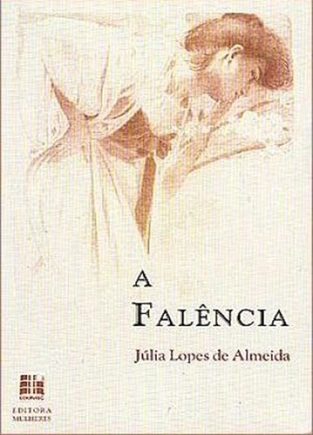
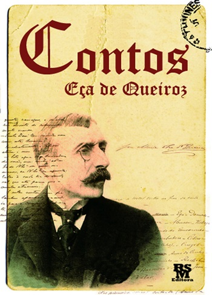
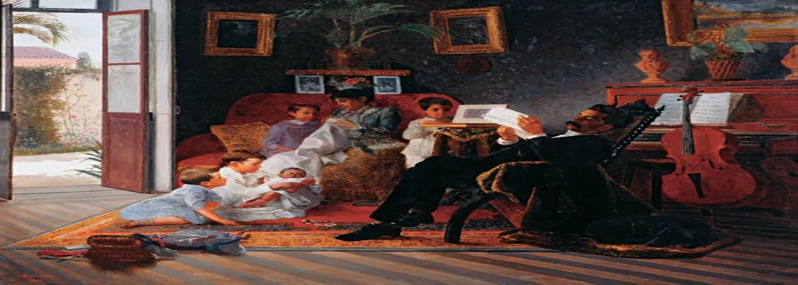

REALISMO
 O Realismo no Brasil, surgido em 1881, enfatizou a crítica social e o cotidiano, utilizando uma linguagem objetiva e detalhada para refletir a realidade da sociedade.
O Realismo, que se estendeu de 1881 a 1902, surge como uma oposição ao idealismo romântico, apresentando uma visão mais objetiva e crítica da sociedade.
As obras desse período são caracterizadas pela análise psicológica dos personagens e pela crítica social. Machado de Assis é um dos maiores expoentes do Realismo brasileiro.
O Realismo no Brasil, surgido em 1881, enfatizou a crítica social e o cotidiano, utilizando uma linguagem objetiva e detalhada para refletir a realidade da sociedade.
O Realismo, que se estendeu de 1881 a 1902, surge como uma oposição ao idealismo romântico, apresentando uma visão mais objetiva e crítica da sociedade.
As obras desse período são caracterizadas pela análise psicológica dos personagens e pela crítica social. Machado de Assis é um dos maiores expoentes do Realismo brasileiro.
OBRAS IMPORTANTES-
"Memórias Póstumas de Brás Cubas" (1881) - Machado de Assis: Inaugura o Realismo com um narrador que é um defunto.
"Dom Casmurro" (1899) - Machado de Assis: Explora a desconfiança conjugal e a dúvida sobre a traição de Capitu.
"Quincas Borba" (1891) - Machado de Assis: Aborda casamentos por interesse e completa a trilogia realista.
"O Ateneu" (1888) - Raul Pompeia: Crítica à sociedade através da vida em um colégio interno.
PRINCIPAIS AUTORES-
Machado de Assis (1839-1908): Um dos maiores escritores da literatura brasileira, conhecido por sua crítica social e análise psicológica.
Raul Pompeia (1863-1895): Autor de "O Ateneu", envolvido em causas sociais e políticas, cuja vida terminou tragicamente.


CARACTERISTICAS
Inversão dos Ideais Românticos: Rompe com a idealização da sociedade.
Enfoque no Cotidiano: Retrato detalhado da vida cotidiana.
Crítica Social: Análise das relações sociais e da sociedade.
Linguagem Simples e Objetiva: Prosa clara e direta.
Detalhamento: Descrições minuciosas de personagens e ambientes.
